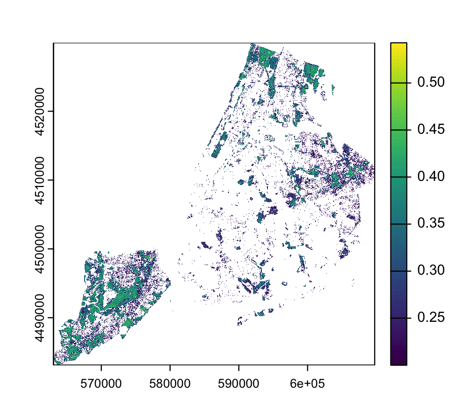

3 Corrections
3.1 Summary
This week, we took a closer look at data correction, joining, and enhancement. These days, a lot of remote sensing data comes nicely packaged as ARD (Analysis Ready Data). As the name suggests, this means the data has been pre-processed, and the necessary corrections completed. Still, it is important to understand the underlying processes.
Data correction for remote sensing can be broken up into geometric, atmospheric, topographic, and radiometric corrections.
Geometric correction refers to the process of aligning points in the image to a reference dataset. An interesting consideration is forward vs. backward mapping, where forward mapping projects input pixels to output coordinates, while backward mapping identifies the corresponding source pixel for each output pixel.
When satellites collect data, interference from the atmosphere can distort the imagery. Depending on what features of the image we’re interested in, atmospheric correction may be necessary. Although Jensen suggests that atmospheric correction is only needed in certain circumstances, we were told it’s best practice to apply it consistently. We learned about methods like Dark Object Subtraction (DOS) and Pseudo-Invariant Features (PIFs).
Topographic correction removes distortion caused by variations in terrain. This is especially important when imaging areas with significant elevation changes, as the angle of the satellite (nadir vs. off-nadir) can create shadows and illumination differences.
Finally, radiometric correction refers to adjusting the raw data to account for sensor noise and inconsistencies. Raw Earth observation data often comes in the form of Digital Numbers (DN), representing pixel intensity. To make the data meaningful, it needs to be converted to spectral radiance through radiometric calibration.
We explored data joining and image enhancement in this week’s practical. I found it interesting to apply the NDVI ratio to NYC. In visualizing this data, it was clear how certain areas of the city have disproportionately more vegetation than others (Figure 1).

Learning more about Earth observation data correction gave me a new appreciation for Analysis Ready Data. This pre-processing significantly reduces the workload, allowing researchers to focus more on data interpretation and analysis rather than spending extensive time on initial corrections. Still, if I were given ARD, I think it would still be important to consider which correction methods were used and how this might impact the product I’ve received.
3.2 Applications
After learning some of the different methods for correcting remote sensing data, I was curious about research on comparing methods and if there was any work on establishing the contexts in which certain corrections might be more suitable than others.
3.2.1 Geometric correction
One paper I found interest is a study by Bannari et al. (1995). In their work, they review mathematical models of geometric corrections for remote sensing images. They outline a number of different error sources that create distortions of images and explore three mathematical models used to conduct geometric correction: equations of collinearity, equations of collinearity related to celestial mechanics and polynomial equations. They find that using an equation of collinearity related to celestial mechanics is the best for mapping that requires high precision. The polynomial method was also found to produce good results under certain conditions.
3.2.2 Atmospheric correction
Work by Hadjimitsis et al. (2004), meanwhile, focuses on the effectiveness of atmospheric correction algorithms. The authors highlight the high number of atmospheric correction algorithms out there while pointing out a gap in research identifying the benefits of different approaches. The authors compare methods by applying them to a series of Landsat-5 images of 10 reservoirs in the Lower Thames valley. They found that the dark object subtraction (DOS) method worked the best most consistently. The method using pseudo-invariant points was less effective, which they attribute to the lack of a solid base image for normalizing the others.
3.2.3 Thoughts
While I recognize that these studies are relatively old, it was interesting nonetheless to consider how methods for correcting Earth observation data have developed and the way researchers have debated various approaches. The papers underscore that no single method is always the best, and the importance of considering the specific context and data being analyzed. While pre-processed data may be convenient, this research reminded me the importance of remaining critical of all data that I’m given and ensuring that I understand the corrections that have been applied.
3.3 Reflection
Considering the variety of methods available for data correction, I was surprised by the number of different approaches and how these could yield different results. Honestly, I expected correction to be far more straightforward, with less room for error. This week impressed on me the importance of understanding the nuances inherent to different methods for identifying potential biases in data. It’s almost overwhelming to determine the most appropriate technique for a given research question, especially when multiple valid options exist. That being said, flexibility in correction methods can also be useful depending on the data available and specific research question. For example, for atmospheric correction, dark object subtraction (DOS) could be more suitable than psuedo-invariant features (PIFs) in an image without a clear reliable reference point.
Exploring image enhancement approaches in the practical further highlighted the range of tools available for research. I enjoyed seeing these tools in action for a practical application. When applying the NDVI ratio to New York City, I was struck by how relatively simple a method this was to identify areas of greenspace in the city. It made me think about the range policy applications, such as examining access to greenspace in different neighbourhoods or targeting areas for increased urban greening.
Overall, this week I gained a deeper appreciation for the foundational work done by researchers in this field. In particular, learning about Virginia Norwood’s contributions was eye-opening. Mainly, I was surprised I had never heard of her before. Given that many women in science often go unrecognized and under-celebrated, I’m glad I had the chance to learn more about her life and achievements (Figure 2). I had also somehow always assumed that remote sensing was far newer a field, so it was unexpected to learn how technology that was developed back in the 1970s is still so relevant today. Moving forward, I will be curious to see how this background knowledge will inform the way I interpret remote sensing work and research.